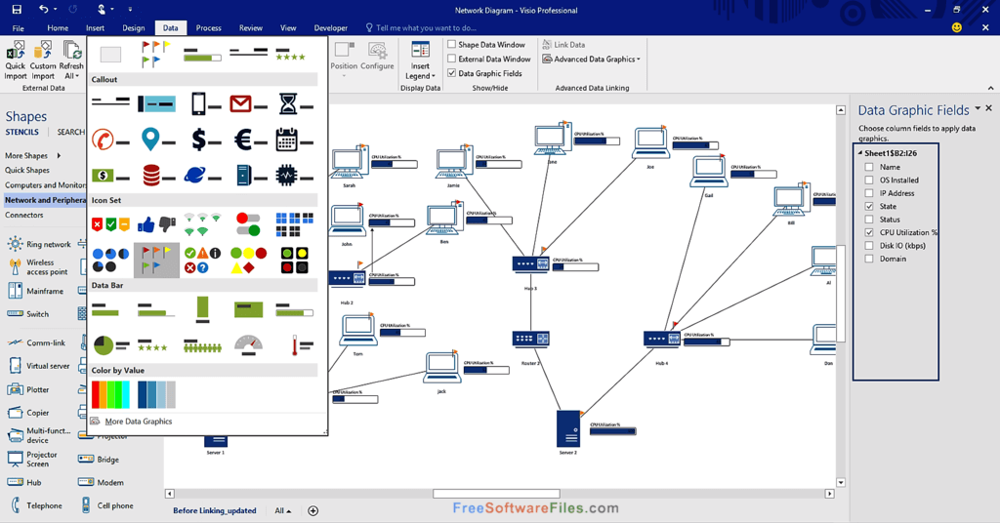

| Microsoft VISIO |
| O Microsoft Visio é um aplicativo para criação de diagramas para o ambiente Windows. O programa serve para gerar diagramas de diversos tipos, como organogramas, fluxogramas, modelagem de dados, diagramas de redes, plantas baixas, cartazes, etc. |
|  | Com o Visio no seu PC ou dispositivo móvel, você pode:
Organizar ideias complexas visualmente. Usar centenas de modelos, incluindo fluxogramas, linhas do tempo, plantas baixas e muito mais. Adicionar e conectar formas, textos e imagens para mostrar as relações em seus dados. Dar aos diagramas uma aparência profissional com estilos, efeitos, temas e planos de fundo. Criar diagramas dinâmicos e vincular a dados do Excel, Access ou SharePoint. Salvar os diagramas na nuvem e compartilhá-los com outras pessoas por meio de um navegador, mesmo com pessoas que não tenham o Visio instalado. Visualizar desenhos em dispositivos móveis. |